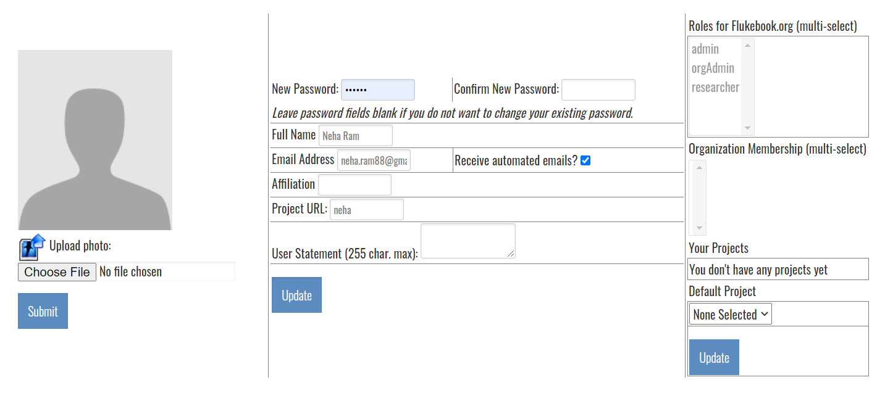
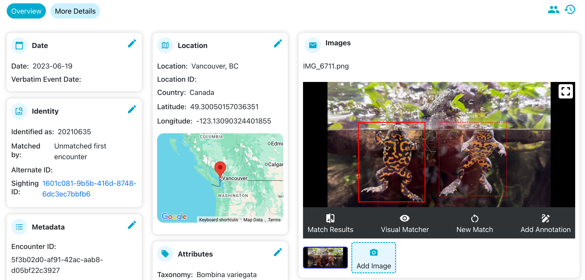

Getting Started#
This topic covers some basic tasks and concepts when first logging into Wildbook.
Account Registration#
To set up a Wildbook account, you will need to contact the Wildbook site managers via the Contact Us page. Wildbook does not currently support self-registration. Once you have your username and a temporary password from the site managers, you can log in by selecting the Login button or by accessing any page that requires a user to sign in to access content.
Change Your Password#
After logging in with your username and password, change your password. Place your cursor on your profile icon and click on User Profile from the menu. Enter your new password in the New Password and Confirm New Password text boxes. 
Read Up on Basic Wildbook Concepts#
The Introduction section of the Wildbook documentation provides a good overview of concepts and technologies used in Wildbook. We suggest starting with the Overview page to familiarize yourself with the basics of the platform.
Submit and Match Your First Encounters#
A great way to get familiar with the Wildbook Image Analysis pipeline is to report your first Encounter. Start simple by submitting a single photograph of a single animal for a species supported by the Wildbook Image Analysis pipeline to generate an individual ID. If you are unsure which species are available for detection and identification, please consult your Wildbook administrator.
Make sure you are logged in to Wildbook. This ensures that any Encounter report you submit is assigned to you.
From your Wildbook’s landing page, select Report an Encounter from the Submit menu.
Click to import or drag a photo to the Photos section and select one photo of one animal for your first Encounter. Wildbook can accept multiple photos of the same animal or even a photo of multiple animals.
Once you submit your photo, you must also submit the Encounter Date, Encounter Location, and Species as the minimum required fields. These required fields are indicated by the asterisk, but you can add additional information such as GPS coordinates and elevation.
If you’re prompted to complete the Captcha before you submit your Encounter, you are not logged in to your account. Log in and try again.
Once you have finished entering your data, click Submit Encounter. You will see a confirmation page for your submission.
Click the View Encounter link on the confirmation page to visit your new Encounter. 
Boxes for Annotations from machine learning detection may have appeared. If you don’t see Annotation boxes around the animal or its parts, the detection stage may not have been completed yet. It may take a minute or more (depending on how busy the Wildbook Image Analysis pipeline is) for the Annotation to appear. You must refresh the page periodically for these boxes to appear after detection has completed.
After the bounding boxes have appeared, if they represent a matchable Annotation class in Wildbook, you can click Match Results to view the ongoing or completed matching process.
The match results page will show you one set of results for each algorithm run on each Annotation from the submission.
Scroll over each potential match (ranked 1-12 from most likely to least likely match) to inspect what each algorithm found similar between the Annotations. Each result includes a rank, an algorithm-specific score, and potentially additional ID and date metadata to help you evaluate the result. See Identification for more information about each algorithm used in Wildbook.
If appropriate, set the ID:
If you find a matched individual in the results, scroll over the matching results and select the Inspect button. Set to Individual will appear and allow you to set the individual ID for the Encounter you submitted. Congratulations! You made your first match!
In this example, this orca did not match any of the proposed match results. This is likely a new individual to the catalog. To set a new ID, return to the Encounter page and click the pencil icon in the Identity section to set the Individual ID. The name you set will become the default name for the individual, but you can set nicknames and alternative IDs later on.
Congratulations! You have matched or identified your first Marked Individual in Wildbook! Click on the ID in the Encounter page to view the Marked Individual’s page and see your submitted Encounter.
You can return to this Encounter from the table displayed when you select My Encounters from the My Data menu.
Next Steps#
Extend Collaboration Invites#
If your Wildbook supports Silo Security, you may want to extend invitations to collaborate to other Wildbook users, allowing view-only or edit-level permissions to your data in Wildbook. See Silo Security for more information about how to extend collaboration invitations from the My Account page.
Request Further Configuration#
Wildbook may require further configuration to better suit your research. Common configuration changes that can be made include:
Adding your project’s study sites (also known as “location ID” in Wildbook) that represent distinct areas where you conduct your data collection.
Associating your user account with an organization and/or providing you with orgAdmin privileges to allow you to bring additional users into Wildbook for your organization.
Adding additional species to Wildbook.
Working with Wild Me to create new machine learning or cross-apply existing techniques for a species.
If these categories apply, please post a Feature Requet on the Wildbook Community forum or contact your Wildbook system administrator.
Bulk Import Legacy Data for Matching#
Many researchers have past data that needs importing into Wildbook to:
Create a base catalog of IDs to match new data against.
Apply machine learning to existing unprocessed data that needs curation and analysis.
See Bulk Import for more information on how to convert your data to an spreadsheet-based format for import into Wildbook.